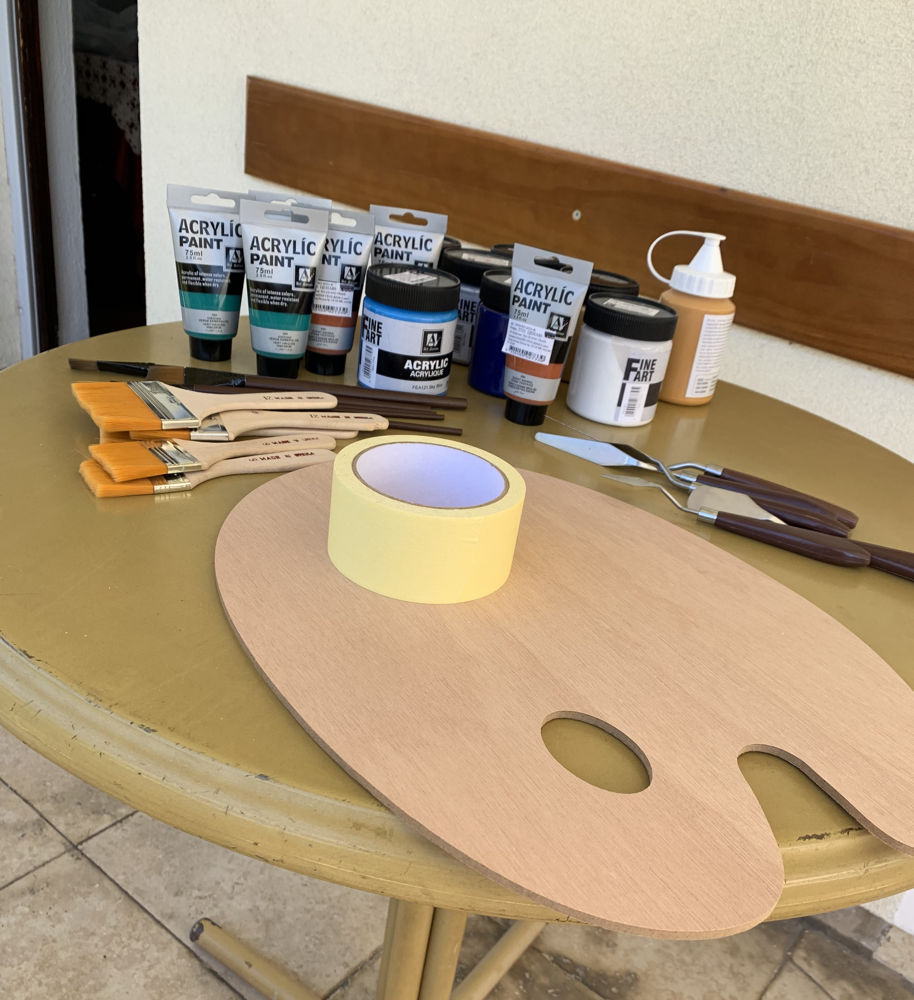

My name is Ljubica, I am 17 and am from Skopje, Macedonia. I am an artist and am working
on furthering my education in this area. My most used mediums are acrylic paint, watercolors, charcoal, pencils
and pastels. I am also interested in digital art, working mostly in Procreate, and would like to develop my skills in this
area as well.
I love music and traveling and often draw inspiration from them, which helps me form new and unique ideas. I enjoy
experimenting with my art, the thematic focus of it and mediums. Trying out different hobbies and interests is also
something I find exciting and a great way to expand my horizons.
Education
Finished primary education in Jan Amos Komenski (1-9 grade)
Currently a senior in Nova International Schools
Will attend School of the Art Institute of Chicago (SAIC)
Skills
Creativity
Active Listening
Teamwork
Digital art (Procreate and Paint Tool SAI)
Design skills (Photoshop and Illustrator)
Painting and Drawing (Traditional Mediums)

Activities
I take part in an art workshop once a week. During this time, I work to develop art skills and experiment
with different mediums. I mostly work with acrylic paint, but I also enjoy working with watercolors, pencils,
charcoal and pastels.
I go to the gym five times a week and I work with a personal trainer.
I take a German course two times a week and am currently level B2.
I enjoy learning new languages, so I also take some courses online to explore more different languages.
I draw digitally on my Ipad and am working to explore this medium more. I sometimes take part
in collaborations and work with other artists online on various projects.
I am also interested in photography and am working to improve in it.
Projects
I've done multiple projects that involve doing art workshops with kids.
These projects involved spending time with the kids, helping them be creative, but also raise awareness
and show people how they can help.
Me and my group later taped the drawings around the city’s bus stops to raise awareness.
Through these projects I was able to do what I love and help someone express their creativity.
I’ve taken part in yearly exhibitions from my art workshop that are organized to show everyone’s work
and progress throughout the year. It is a way for us to bond, but also acknowledge how much we have improved.
I’ve taken part in a few collaborations with different artists online, for certain occasions
and it is something I enjoy working on. Being able to work with other artists and share different ideas
is a great way to get more inspiration and see another person’s perspective, so I hope to take part
in more collaborations in the future.